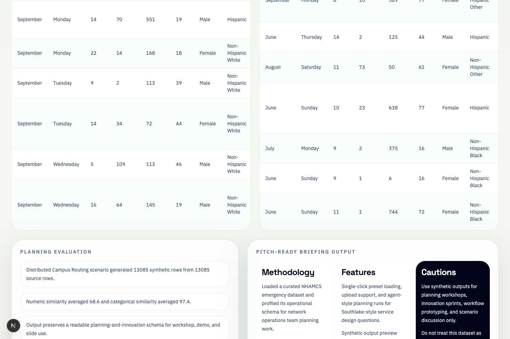

An agentic workflow — with reasoning and analysis technically supported by theFinlyApp — that turns safe public emergency department data into synthetic planning artifacts, then makes the limitations visible.
The emphasis is on how the system thinks and acts, not just the data it produces. The agentic reasoning engine is technically supported by theFinlyApp — powering every step from intent framing to quality evaluation and self-correction.
Interprets the stakeholder's planning goal and frames it as a specific operational question.
Analyzes dataset quality, identifies sensitive columns, flags missingness.
Decides synthesis approach, target rows, and constraints — not scripted.
Scores fidelity, privacy, utility. Triggers retry if quality is below threshold.
Crafts planning summaries tailored to the scenario and audience.
CDC/NCHS NHAMCS 2022 public ED dataset — 13,085 visits, 21 operational columns
Distributed campus routing · Community diversion · Regional growth · ED surge
Synthetic dataset + evaluation metrics + caution report + pitch artifacts + downloadable ZIP
AI reasons and decides at each step · Strategy adapts to data · Evaluate triggers retries · Powered by theFinlyApp
Saved demo reliability, visible AI reasoning, Southlake-specific scenarios, and exportable planning artifacts.
Four planning scenarios aligned to distributed-network strategy: campus routing, diversion, growth, surge.
Reasoning trace at every agent step — judges see what the AI decided and why.
Fidelity, privacy, utility scores plus source-vs-synthetic comparison in one screen.
Auto-generated methodology, features, cautions + downloadable ZIP for workshops.

Synthetic data is powerful for planning and experimentation. But it is not local operational truth, and it should not be used without governance and validation.
Validate this workflow with governed Southlake data, operational owners, and formal privacy review. The agentic architecture is ready — it needs real local data to become a real planning tool.
In healthcare, the team that says "here's what we don't know yet" is more trustworthy than the team that claims everything is solved. This caution boundary is a feature, not a weakness.